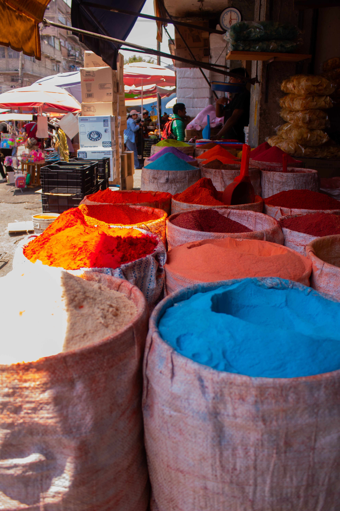
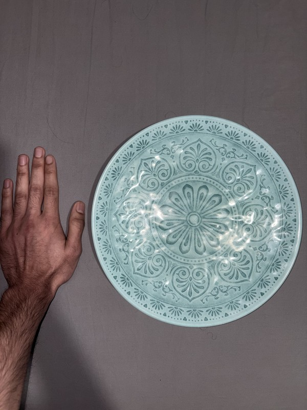

Original Image
Click to open the image in its original (JPG) format and in each converted format: Original Image (JPG) | Original Image as a GIF | Original Image in Greyscale (JPG) | Original Image in Black and White (PNG)
This page shows how images behave on the web. Using a large photo from Pexels and a photo I took myself, it compares common formats (JPG, GIF and PNG), shows the difference between shrinking an image with CSS and resizing it in an editor, and demonstrates what happens when an image's proportions are changed or a small image is stretched to look big.
I picked this photo because its bright colors and the fine weave of the burlap sacks make every change in format and size easy to see. It was taken by Erick Melgar and is free to use on Pexels. Erick shares a personal photography portfolio on Pexels with more than 160 free photos that have been viewed over 740,000 times, and he posts more of his work on Instagram as nueveadventurs. It shows sacks of blue, orange, red and pink powder at an outdoor market, with stalls and shoppers behind them. The original is a portrait JPG, 3456 x 5184 pixels, and 1.74 MB.
Click to open the image in its original (JPG) format and in each converted format: Original Image (JPG) | Original Image as a GIF | Original Image in Greyscale (JPG) | Original Image in Black and White (PNG)



I took this photo with my phone to put a perfectly round object next to something with no perfect proportions: my hand. If the plate ever looks like an oval on this page, the image has been distorted. It shows my right hand laid flat beside a turquoise plate with a teal floral pattern, shot from straight above on a grey surface. The original is a portrait JPG, 3024 x 4032 pixels, and 3.22 MB.
Click to open the image in its original (JPG) format and in each converted format: Original Image (JPG) | Original Image as a GIF | Original Image in Greyscale (JPG) | Original Image in Black and White (PNG)


